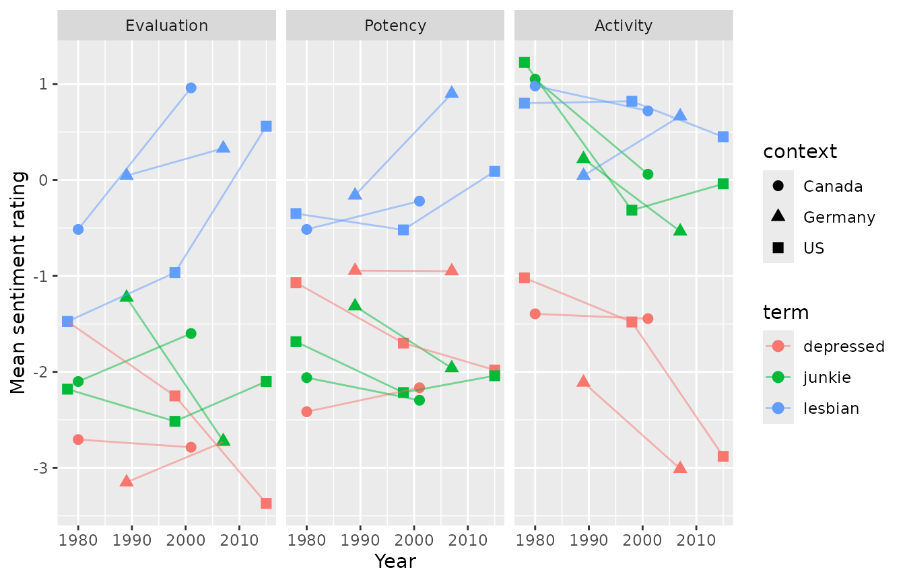

Comparing meanings: a worked example
Source:vignettes/tidyversesubsetexample.Rmd
tidyversesubsetexample.Rmd
library(actdata)
library(dplyr)
#>
#> Attaching package: 'dplyr'
#> The following objects are masked from 'package:stats':
#>
#> filter, lag
#> The following objects are masked from 'package:base':
#>
#> intersect, setdiff, setequal, union
library(tidyr)
library(ggplot2)The Tidyverse makes it easy to create new combinations or subsets of ACT dictionaries in a way that is completely replicable, and to visualize quantities of interest over time and/or across countries. An example of how these data sets can be used along with dplyr, tidyr, and ggplot is presented here.
Say we are interested in comparing changes in evaluation ratings for terms over time in whatever countries possible. The dictionary table above as well as dict_info() show that the three countries in which multiple dictionaries have been collected are the U.S., Canada, and Germany. Let’s choose three U.S. dictionaries (nc1978, texas1998, and usfullsurveyor2015), two Canadian dictionaries (ontario1980 and ontario2001), and two German dictionaries (germany1989 and germany2007). Now we need to find the terms that are in all seven dictionaries. The term table is useful to quickly get a first look at this.
datasets <- c("nc1978", "texas1998", "usfullsurveyor2015", "ontario1980", "ontario2001", "germany1989", "germany2007")
term_table_short <- term_table %>%
# we only need the columns for our chosen dictionaries
select(term, component, all_of(datasets)) %>%
# filter to those terms present in all chosen dictionaries
filter(if_all(datasets, ~ . == 1))
#> Note: Using an external vector in selections is ambiguous.
#> ℹ Use `all_of(datasets)` instead of `datasets` to silence this message.
#> ℹ See <https://tidyselect.r-lib.org/reference/faq-external-vector.html>.
#> This message is displayed once per session.
head(term_table_short)
#> # A tibble: 6 × 9
#> term component nc1978 texas1998 usfulls…¹ ontar…² ontar…³ germa…⁴ germa…⁵
#> <chr> <chr> <dbl> <dbl> <dbl> <dbl> <dbl> <dbl> <dbl>
#> 1 adulterer identity 1 1 1 1 1 1 1
#> 2 afraid modifier 1 1 1 1 1 1 1
#> 3 alcoholic identity 1 1 1 1 1 1 1
#> 4 anxious modifier 1 1 1 1 1 1 1
#> 5 appeal_to behavior 1 1 1 1 1 1 1
#> 6 applicant identity 1 1 1 1 1 1 1
#> # … with abbreviated variable names ¹usfullsurveyor2015, ²ontario1980,
#> # ³ontario2001, ⁴germany1989, ⁵germany2007We now have a list of the 225 identities included in all seven dictionaries. Let’s get the mean EPA values for these terms.
# trim the term table further to get rid of the dataset key columns
term_table_forfilter <- term_table_short %>%
select(term, component)
# Now, merge this list with the EPA summary dataset to get epa values for the countries and years we are interested in.
# First, subset the epa summary dataframe to the dictionaries we want, to only include means, and to only include gender averaged values.
term_subset <- epa_subset(dataset = datasets, stat = "mean", gender = "average") %>%
# then right join with the term list we built before to subset to only the terms we are interested in.
right_join(term_table_forfilter, by = c("term", "component")) %>%
arrange(term)
term_subset[1:20,]
#> # A tibble: 20 × 10
#> term component dataset context year gender instc…¹ E P A
#> <chr> <chr> <chr> <chr> <chr> <chr> <chr> <dbl> <dbl> <dbl>
#> 1 academic identity german… Germany 1989 avera… 11 000… 0.81 0.54 -0.765
#> 2 academic identity german… Germany 2007 avera… 11 000… 1.60 1.25 -0.125
#> 3 academic identity nc1978 US 1978 avera… 11 000… 0.975 0.735 -0.5
#> 4 academic identity ontari… Canada 1980 avera… 11 000… 1.38 1.04 -0.42
#> 5 academic identity ontari… Canada 2001 avera… 11 000… 1.64 1.23 0.235
#> 6 academic identity texas1… US 1998 avera… 11 000… 1.83 1.69 0.37
#> 7 academic identity usfull… US 2015 avera… 11 000… 2.34 2.26 -0.12
#> 8 adopt behavior german… Germany 1989 avera… 10 000… 1.8 -0.265 -0.485
#> 9 adopt behavior german… Germany 2007 avera… 10 000… 2.24 1.77 -0.235
#> 10 adopt behavior nc1978 US 1978 avera… 10 000… 1.92 1.56 0.035
#> 11 adopt behavior ontari… Canada 1980 avera… 10 000… 2.41 1.04 0.33
#> 12 adopt behavior ontari… Canada 2001 avera… 10 000… 2.30 1.58 0.755
#> 13 adopt behavior texas1… US 1998 avera… 10 000… 3.04 1.88 1.25
#> 14 adopt behavior usfull… US 2015 avera… 10 000… 3.12 2.88 0.15
#> 15 adulterer identity german… Germany 1989 avera… 10 000… -1.6 0.445 0.745
#> 16 adulterer identity german… Germany 2007 avera… 10 000… -2.46 0.365 0.68
#> 17 adulterer identity nc1978 US 1978 avera… 10 000… -1.80 0 0.855
#> 18 adulterer identity ontari… Canada 1980 avera… 10 000… -1.92 0.5 0.89
#> 19 adulterer identity ontari… Canada 2001 avera… 10 000… -2.32 -0.09 0.31
#> 20 adulterer identity texas1… US 1998 avera… 10 000… -2.77 -0.655 0.345
#> # … with abbreviated variable name ¹instcodesNow we have a dataframe that contains just the gender-averaged EPA values for the terms that the seven dictionaries share.
How are meanings changing overall? We can calculate meaning change summary statistics to get a better sense of this:
eval_change <- term_subset %>%
# get rid of the texas dataset here; just use the first and last US sets for a change calculation. Drop institution codes too, we won't use them here.
filter(dataset != "texas1998") %>%
# first pivot longer so that there is one sentiment value per row
pivot_longer(cols = c(E, P, A), names_to = "dimension", values_to = "rating") %>%
select(term, component, context, year, dimension, rating, -instcodes) %>%
mutate(order = ifelse(year %in% c("2015", "2007", "2001"), "late", "early")) %>%
select(-year) %>%
# then pivot wider by time order
pivot_wider(names_from = order, values_from = rating) %>%
# we get a warning here because there are a few duplicate terms. Clown, secretary, and waiter are all included more than once in the nc1978 dataset. This is something to watch for; there are other duplicates in other datasets as well. These are in the original raw data files and they have been left as is in this package. Here, I remove these terms. I also remove "no_emotion" here.
filter(!(term %in% c("waiter", "clown", "secretary", "no_emotion"))) %>%
# now calculate change
mutate(change = as.numeric(late) - as.numeric(early))
#> Warning: Values from `rating` are not uniquely identified; output will contain list-cols.
#> * Use `values_fn = list` to suppress this warning.
#> * Use `values_fn = {summary_fun}` to summarise duplicates.
#> * Use the following dplyr code to identify duplicates.
#> {data} %>%
#> dplyr::group_by(term, component, context, dimension, order) %>%
#> dplyr::summarise(n = dplyr::n(), .groups = "drop") %>%
#> dplyr::filter(n > 1L)
summary(eval_change$change)
#> Min. 1st Qu. Median Mean 3rd Qu. Max.
#> -3.09500 -0.30000 0.07000 0.08698 0.50000 2.68500Mean and median change for all three countries are close to 0, suggesting broad stability in cultural meanings over time, but in all three datasets there are terms which change meaning substantially. Let’s find the terms that have undergone the biggest changes in meaning:
eval_change_substantial <- eval_change %>%
arrange(-abs(change))
head(eval_change_substantial)
#> # A tibble: 6 × 7
#> term component context dimension early late change
#> <chr> <chr> <chr> <chr> <list> <list> <dbl>
#> 1 fool identity Germany A <dbl [1]> <dbl [1]> -3.10
#> 2 cajole behavior Germany A <dbl [1]> <dbl [1]> -2.7
#> 3 cajole behavior Germany E <dbl [1]> <dbl [1]> 2.68
#> 4 harm behavior Germany P <dbl [1]> <dbl [1]> -2.59
#> 5 doll identity US A <dbl [1]> <dbl [1]> -2.51
#> 6 miserable modifier Germany P <dbl [1]> <dbl [1]> -2.26This data format is amenable to plotting with ggplot. Let’s look at a few of the terms which have seen substantial meaning change.
change_terms <- c("lesbian", "junkie", "depressed")
# I'm returning to the subset data frame here
terms_toplot <- term_subset %>%
filter(term %in% change_terms) %>%
rename(Evaluation = E,
Potency = P,
Activity = A) %>%
pivot_longer(cols = c(Evaluation, Potency, Activity), names_to = "dimension", values_to = "rating") %>%
mutate(dimension = factor(dimension, levels = c("Evaluation", "Potency", "Activity")))
ggplot(terms_toplot, aes(x = as.numeric(year), y = rating, shape = context, color = term)) +
geom_point(size = 2.5) +
geom_line(alpha = .5) +
facet_wrap("dimension") +
labs(x = "Year",
y = "Mean sentiment rating")
This shows that “lesbian” rose on the evaluation and power dimensions in all three countries and “junkie” fell on the activity dimension in all three countries. The trajectory of “depressed” was more place-dependent: it fell on all three dimensions in the US, stayed stable on evaluation and potency in Canada and Germany, and fell on activity in Germany. This type of analysis cannot show causation, of course, but it can be a useful start point for identifying and investigating terms that may have been affected by social movements or other shifts within and/or across countries. Similarly, this kind of analysis could be used to identify terms that vary across cultures, and, in cultures where multiple datasets have been collected, to investigate whether these differences have changed over time.